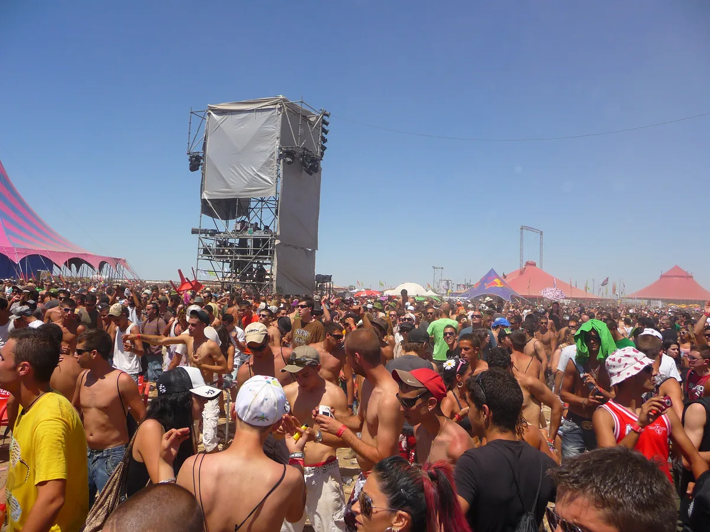
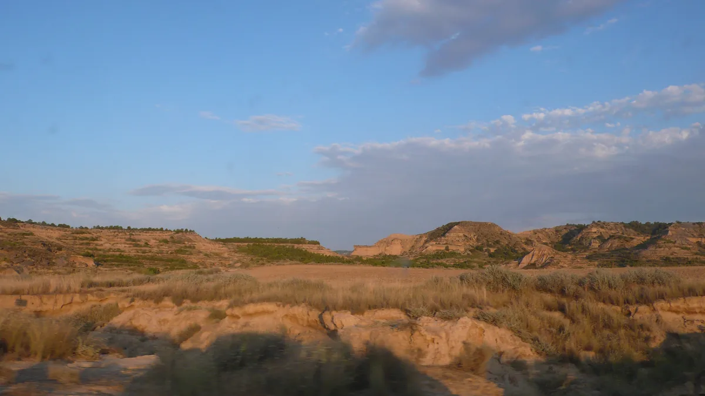

Spain festival guide
Monegros Desert Festival 2027: The Desert Rave Explained
One long electronic event on exposed land between Barcelona and Zaragoza, rooted in Florida 135 and built for competing stages through the night.
One long night requires its own plan.
Monegros asks for a different kind of planning from a city festival or a camping weekender. The site is a dry, exposed tract of family land between Barcelona and Zaragoza, and the event runs from afternoon into the following day. Music, dust, heat and distance are part of the same experience.
Monegros Desert Festival 2027.
Monegros 2027 is scheduled for Saturday 31 July. The festival has begun its 2027 campaign, and its ticketing partner reported the date from the official announcement. The artist page still lists the lineup as forthcoming.
| Fact | Current information |
|---|---|
| Date | Saturday 31 July 2027 |
| Location | N-II, kilometre 416, near Fraga, Aragón |
| Format | One-day electronic festival running overnight |
| 2027 lineup | Not yet announced |
| Latest measured format | 22 hours and ten stages in 2026 |
| Camping | No general multi-day festival campsite |
The official address is N-II, kilometre 416, 22520 Fraga, Huesca. Exact 2027 hours, transport routes, age rules and payment arrangements should be checked again when the edition-specific FAQ appears.
What Monegros is.
The festival occupies land at Les Peñetes in the Monegros region. It is commonly described as a desert rave, although the useful fact is simpler: this is an exposed, purpose-built festival site without the shade, streets or hotel access of an urban event.

The 2026 edition ran for 22 hours across ten stages and reported more than 60,000 visitors from 97 countries. Those figures describe that edition. They do not establish the final 2027 stage count, hours or capacity.
From Florida 135 to the desert.
The Arnau family's club Florida 135, in nearby Fraga, is the root of Monegros. Juan Arnau has described a gathering on the family land in 1993 for a few hundred friends of the club. Festival histories usually date the formal Monegros event to 1994. Keeping both dates explains the origin without forcing one neat anniversary.
The festival grew under names including Groove Parade before Monegros became the permanent identity. It ran through 2014, attempted returns were interrupted by the cancelled 2020 and 2021 editions, and finally returned in 2022.
Who runs Monegros.
Monegros Musical SL is the legal operator, and its privacy material groups the company with ELROW under the elrow Family name. The Arnau family founded both histories and remains publicly identified with the festival. Publicly accessible material does not establish a simple current equity split, so the page does not reduce the organisation to a single owner.
What music plays at Monegros.
Techno and hard techno form a large part of recent Monegros programmes, but the festival also books house, hip-hop, drum and bass, hardcore and trance-related music. Stages have their own identities, and recent editions have included partnerships such as an Awakenings stage alongside areas rooted in the farm's own history.
The useful way to hear Monegros is through exact recordings from the site. Sama’ Abdulhadi’s set for Beatport is the most-viewed Monegros recording I found, and Indira Paganotto’s closing set from 2025 shows the hard, fast techno of the current programming. The festival's own archive also reaches back to Jeff Mills, Oscar Mulero and Vitalic, showing that the event's electronic range predates the current hard-techno cycle.
The site and the overnight format.
In 2026 the gates opened in the afternoon and the programme ran until noon the next day. Daylight and darkness produce different versions of the same site: open ground and industrial structures in the heat, then a dense network of lit stages through the night.

There is no general campsite equivalent to a multi-day camping festival. Official buses and road access are the main planning questions, with Fraga and Lleida serving as useful regional reference points and Barcelona as a common international arrival route. Final 2027 transport and accommodation products are still pending.
Plan your Monegros trip.
Monegros is a 22-hour event on an isolated desert site, not a city festival with an easy walk home. Secure the return journey before the ticket, then budget for the cashless site and carry only what survives the official bag check.
Budget the whole weekend.
Current official seller information for 31 July 2027. Ticket tiers can rise as allocations sell.
| Ticket option | Price |
|---|---|
| General admissionPersonalised ticket; official ID must match | from €83 |
| VIP TentUp to five people; price shown per person, booking fee excluded | from €523.95 pp |
| Name changeCurrent official FAQ fee | €20 |
| Reusable cupRequired with the first drink; non-refundable | €2 |
Buy only through Enterticket or the official RebelTickets resale route. The official FAQ recommends printing the ticket because mobile coverage in the desert can be weak.
Choose your route.
Official return coach
Official Monegros transportBook the round trip from an announced Spanish city through the festival site. Outbound departures are timed; return coaches begin at 08:00 and leave only when full.
Train plus organised coach
There is no useful rail stop at the festival gate. Travel to the departure city named on your booked coach ticket, then use that service for the final desert leg.
Car via N-II kilometre 416
Festival site on Google MapsFollow the festival parking signs for your direction of arrival. The organiser warns of queues lasting several hours after the event and gives buses priority.
Coach departure points are published later and sent to the email attached to the bus ticket. Do not book a city hotel as though the festival were walkable from Fraga.
Where you sleep.
There is no general festival campsite, and camping in the car park is prohibited. Treat the event as one continuous overnight session: use an official return coach, a sober driver, or accommodation before and after the event in the city served by your transport.
Read the official FAQFood and drink.
The site is cashless. Food and drink prices for 2027 have not been published. Outside food and drinks are prohibited, although one energy bar and an empty bottle or hydration pack are allowed; free drinking-water points are provided.
- Cashless top-up minimum
- €10
- Unused-balance refund fee
- €2
- Reusable cup
- €2
- Temporary re-entry, 00:01–04:00
- €25 each exit
Pack for the site, not the forecast.
- Printed ticket plus the QR saved offline and matching photo ID
- Empty bottle or hydration pack, maximum one litre
- Sun cream up to 200 ml, hat, sunglasses and fan
- Earplugs, power bank and a light layer for the morning
- Small bag no larger than 35 × 20 × 12 cm or 10 litres
Leave at home or recheck.
- Outside food or drink, apart from one permitted energy bar
- Liquids at entry; containers must be empty
- Large bags, chairs, parasols, tents and selfie sticks
- Aerosols, professional cameras, drones and dangerous items
- Driving away immediately after closing without allowing for long queues
Monegros is strictly 18+. Normal re-entry is not allowed; the current exception costs €25 per exit between 00:01 and 04:00, then re-entry is allowed after 04:01 while the wristband remains intact.
Monegros Desert Festival FAQ.
When is Monegros Desert Festival 2027?
The 2027 edition is scheduled for Saturday 31 July. The detailed running hours and lineup remain pending.
Where is Monegros Desert Festival held?
It is held at N-II, kilometre 416, near Fraga in Huesca province, Aragón, Spain.
How long does Monegros last?
The 2026 edition ran for 22 hours, from Saturday afternoon until Sunday noon. The festival had not yet confirmed the 2027 operating hours when this guide was checked.
What music is played at Monegros?
Recent editions have included techno, hard techno, house, hip-hop, drum and bass, hardcore and trance-related sounds across several stages.
Is there camping at Monegros Desert Festival?
Monegros is not organised like a multi-day camping festival. Some premium products have included tent options in earlier editions, but visitors should check the official 2027 offer instead of assuming general camping is available.
Is Monegros cashless and over 18?
The 2026 edition was cashless and restricted to adults. Treat those as latest-edition rules until the official 2027 FAQ confirms them.
How do you get to Monegros?
Visitors usually arrive by official festival bus or road. Fraga and Lleida are the closest useful transport references, while Barcelona is a common international starting point. Use the 2027 travel page for the final routes.
Sources.
Continue reading
Read next.
 Festivals~7 min read
Festivals~7 min readSziget Festival 2027: Dates, Music, Camping and Travel
Five days on Óbuda Island, with pop, rock and hip-hop beside club stages, theatre, circus and a rail link into Budapest.
Read article → Festivals~7 min read
Festivals~7 min readBoomtown Festival 2027: Dates, Location, History and Music
A five-day camping festival built as a fictional city, with soundsystem culture, electronic music, live bands and street theatre.
Read article → Festivals~7 min read
Festivals~7 min readEXIT Festival: History, Petrovaradin Fortress and What Comes Next
From a Novi Sad student movement and the Dance Arena at Petrovaradin Fortress to the post-2025 global tour.
Read article → Rave spots~10 min read
Rave spots~10 min readBerghain: Panorama Bar, Sound and Residents
Berghain explained: the former power station, Panorama Bar upstairs, Halle am Berghain, the Kantine, and the Ostgut Ton label.
Read article →